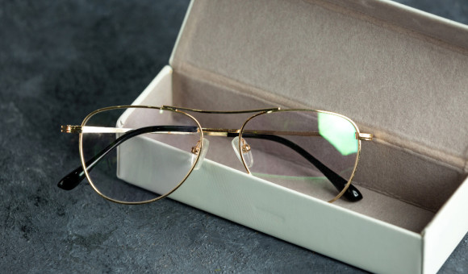
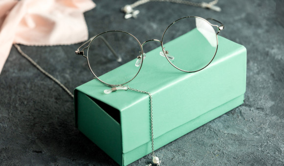
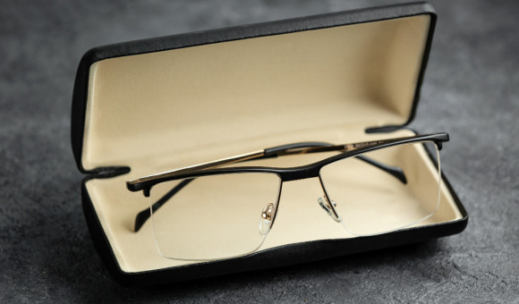

Миопия – это нарушение зрения, когда человек хорошо видит вблизи, но плохо вдаль. Близорукость может возникнуть как у детей, так и у взрослых. Ношение очков позволит снизить напряжение, благодаря чему можно избежать дальнейшего снижения зрительных функций. При близорукости назначают очки с минусовыми диоптриями. При слабой степени миопии подбор коррекции довольно прост – линзы имеют одну зону с оптической силой до -3 диоптрий. А вот пациентам со средней или высокой степенью близорукости нужны либо отдельные очки для близи и для дали, либо прогрессивные изделия с несколькими оптическими зонами.
Когда нужно носить очки?

Близорукость

Дальнозоркость
Дальнозоркость – это ухудшение зрения вблизи. Она возникает как по врожденным, так и по приобретенным (травмы, инфекции глаз) причинам. При дальнозоркости очки следует носить постоянно даже при слабой степени отклонения. Для ее корректирования используются собирательные линзы с плюсовыми диоптриями. Особенностью дальнозоркости является то, что для обеспечения четкого видения на любом расстоянии часто требуется несколько пар очков. В таком случае сделать коррекцию более комфортной помогут прогрессивные линзы.

Астигматизм
Это зрительное нарушение значительно утяжеляет подбор коррекции, так как используются особые цилиндрические или торические линзы.Они сложны в изготовлении и часто требуют периода привыкания. Подробнее о подборе коррекции при астигматизме можно прочитать в статье. Ношение очков при астигматизме не всегда комфортно, тогда выходом могут стать контактные линзы или лазерная коррекция зрения.

Пресбиопия
Примерно после 45 лет в глазу происходят возрастные изменения, из-за чего эластичность хрусталика снижается. В таких случаях глазам становится трудно сфокусироваться на близко расположенных предметах, возникает пресбиопия – возрастная дальнозоркость. Она появляется и при отличном зрении, и при других нарушениях рефракции. В последнем случае она будет сопряжена с близорукостью или астигматизмом. При любых зрительных проблемах следует обратиться к офтальмологу или оптометристу. Подобрать очки для зрения онлайн можно и в интернете. Для этого понадобится выписанный рецепт от врача.